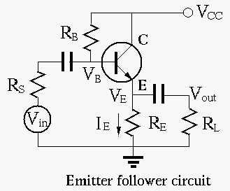
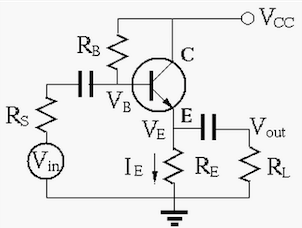
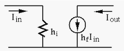
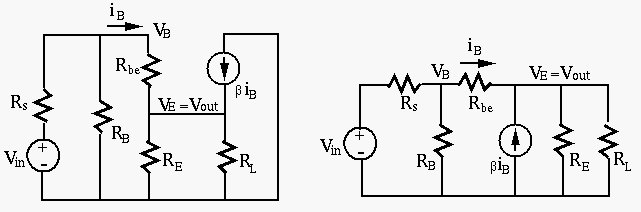

Next: Multi-stage Amplification Up: ch4 Previous: AC equivalent circuits
The input and output of an emitter follower are the base and the emitter, respectively, and the collector is at AC zero. The circuit is therefore a common-collector circuit (for AC).

The negative feedback effect due to  can be shown qualitatively:
can be shown qualitatively:
| (107) |
| (108) |
 we get:
we get:
| (109) |
| (110) |
| (111) |
Example
Assume
,
,  . Find so
that the DC operating point is in the middle of the load line.
. Find so
that the DC operating point is in the middle of the load line.
For  to be in the middle of the load line, we need to have
, i.e., :
to be in the middle of the load line, we need to have
, i.e., :
| (112) |
we get
. Now we have
| (113) |
| (114) |
AC small-signal equivalent circuit
The AC equivalent circit (based on small signal model of the transistor) of the emitter follower can be found as:
  
Based on this small signal model, the three system parameters: voltage gain, input resistance, and output resistance can be obtained as shown below.
As  is significantly greater than and , it is
neglected in the analysis below.
is significantly greater than and , it is
neglected in the analysis below.
 |
(115) |
| (116) |
 is smaller
than but approximately equal to 1. Note that is positive, i.e., the
output voltage is in phase with the input voltage.
is smaller
than but approximately equal to 1. Note that is positive, i.e., the
output voltage is in phase with the input voltage.
The input resistance is the parallel combination of and the
resistance  of the circuit to right of the base of the
transistor, including the load
of the circuit to right of the base of the
transistor, including the load  , which can be found as the
ratio of the voltage
, which can be found as the
ratio of the voltage  and the current
and the current  .
.
| (117) |
| (118) |
| (119) |
The output resistance is the parallel combination of and the
resistance of the circuit to the left of the emitter of the
transistor (including  ), which can be found as the ratio of the
open-circuit voltage (with
), which can be found as the ratio of the
open-circuit voltage (with
 ) and the short-circuit
current (with
) and the short-circuit
current (with  ).
).
is approximately the same as the source voltage , as the voltage gain of the emitter follower is close to unity.
| (120) |
| (121) |
| (122) |
Conclusion:
The emitter follower is a circuit with negative feedback, i.e., the full output is fed back to become part of its input . Due to this deep negative feedback, it has the following properties:
The emitter follower acts as an impedance transformer with a ratio
of  , i.e., the input resistance is times greater than
and the output resistance is times smaller than
. In the ideal case when
, i.e., the input resistance is times greater than
and the output resistance is times smaller than
. In the ideal case when  and
, we have
and
.
and
, we have
and
.
Although the emitter follower circuit does not amplify the signal voltage,
it drastically improves the input and output resistances, compared with
the input resistance
and output resistances
 of
the common-emitter fixed biased circuit. Specifically, due to its high input
resistance
of
the common-emitter fixed biased circuit. Specifically, due to its high input
resistance  , it draws little current from the source and causes
little internal voltage drop in the source, and also due to its low output
resistance
, it draws little current from the source and causes
little internal voltage drop in the source, and also due to its low output
resistance  , I can drive heavy load (low ) without lowering
the output voltage. It is therefore widely used as both the input and output
stages for a multi-stage voltage amplification circuit.
, I can drive heavy load (low ) without lowering
the output voltage. It is therefore widely used as both the input and output
stages for a multi-stage voltage amplification circuit.